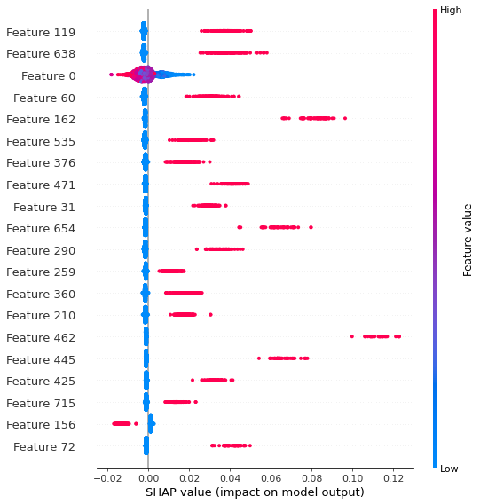

import pandas as pd
df = pd.read_csv("games.csv")LOL s10 high elo ranked games prediction.
- toc: true
- badges: true
- comments: true
- author: Jaekang Lee
- image: images/diagram.png
- categories: [fastpages, jupyter]## Introduction
Introduction
Let’s predict who won the match given team composition and how long game played out
Get dataset
The dataset is a collection of League of Legends High Elo(Challenger, GM, Master, High Diamonds) Ranked games in Season 10, Korea(WWW), North America(NA), Eastern Europe(EUNE), and Western Europe(EUW) servers. These datas were collected from op.gg by web scrapping with python spyder. The latest game was played on Oct.16th on the dataset. In total there are 4028 unique games. Note that I’ve used one-hot encoding hence [99,54,101,73,57,96,52,102,68,52] this list represents number of all unique champions used in each lanes [BlueTop, BlueJG, BlueMid, BlueAdc, BlueSup, RedTop, RedJg, RedMid, RedAdc, RedSup] respectivley. Note that there are in total 151 unique champions with ‘Samira’ as the latest addition.
Some Setups
# Python ≥3.5 is required
import sys
assert sys.version_info >= (3, 5)
# Scikit-Learn ≥0.20 is required
import sklearn
assert sklearn.__version__ >= "0.20"
try:
# %tensorflow_version only exists in Colab.
%tensorflow_version 2.x
except Exception:
pass
# TensorFlow ≥2.0 is required
import tensorflow as tf
from tensorflow import keras
assert tf.__version__ >= "2.0"
%load_ext tensorboard
# Common imports
import numpy as np
import os
# to make this notebook's output stable across runs
np.random.seed(42)
# To plot pretty figures
%matplotlib inline
import matplotlib as mpl
import matplotlib.pyplot as plt
mpl.rc('axes', labelsize=14)
mpl.rc('xtick', labelsize=12)
mpl.rc('ytick', labelsize=12)
# Where to save the figures
PROJECT_ROOT_DIR = "."
CHAPTER_ID = "deep"
IMAGES_PATH = os.path.join(PROJECT_ROOT_DIR, "images", CHAPTER_ID)
os.makedirs(IMAGES_PATH, exist_ok=True)
def save_fig(fig_id, tight_layout=True, fig_extension="png", resolution=300):
path = os.path.join(IMAGES_PATH, fig_id + "." + fig_extension)
print("Saving figure", fig_id)
if tight_layout:
plt.tight_layout()
plt.savefig(path, format=fig_extension, dpi=resolution)The tensorboard extension is already loaded. To reload it, use:
%reload_ext tensorboarddf.head(5) # First look at our dataset. Game_length includes some annoying string values instead of time value| game_length | mmr | result | server | team_1 | team_2 | timestamp | |
|---|---|---|---|---|---|---|---|
| 0 | 25m 38s | NaN | Victory | na | Riven,Nidalee,Galio,Jhin,Pantheon | Camille,Olaf,Cassiopeia,Ezreal,Alistar | 2020-10-13 09:31:42 |
| 1 | 25m 38s | NaN | Defeat | na | Teemo,Nidalee,Lucian,Caitlyn,Senna | Irelia,Hecarim,Cassiopeia,Jinx,Lulu | 2020-10-13 06:00:17 |
| 2 | 25m 38s | NaN | Defeat | na | Malphite,Olaf,Taliyah,Ezreal,Alistar | Sylas,Lillia,Lucian,Senna,Pantheon | 2020-10-13 05:06:45 |
| 3 | 25m 38s | NaN | Defeat | na | Neeko,Shen,Orianna,Kai'Sa,Nautilus | Riven,Hecarim,Cassiopeia,Samira,Morgana | 2020-10-13 04:28:00 |
| 4 | 25m 38s | NaN | Defeat | na | Fiora,Nunu & Willump,Irelia,Jhin,Karma | Renekton,Elise,Kled,Jinx,Morgana | 2020-10-13 04:00:51 |
temp_df = df[['game_length', 'result', 'team_1', 'team_2']] # Select only interests
blue = temp_df['team_1']
red = temp_df['team_2']
n = len(df)
blue_champs = []
red_champs = []
for i in range(0,n):
blue_champs += [blue[i].split(',')]
red_champs += [red[i].split(',')]
top = []
jg = []
mid = []
adc = []
sup = []
for i in range(0, n):
top += [blue_champs[i][0]]
jg += [blue_champs[i][1]]
mid += [blue_champs[i][2]]
adc += [blue_champs[i][3]]
sup += [blue_champs[i][4]]
top_2 = []
jg_2 = []
mid_2 = []
adc_2 = []
sup_2 = []
for i in range(0, n):
top_2 += [red_champs[i][0]]
jg_2 += [red_champs[i][1]]
mid_2 += [red_champs[i][2]]
adc_2 += [red_champs[i][3]]
sup_2 += [red_champs[i][4]]data = temp_df.drop(columns=['team_1','team_2'])
# blue team
data['top1'] = top
data['jg1'] = jg
data['mid1'] = mid
data['adc1'] = adc
data['sup1'] = sup
# red team
data['top2'] = top_2
data['jg2'] = jg_2
data['mid2'] = mid_2
data['adc2'] = adc_2
data['sup2'] = sup_2data.head(10)| game_length | result | top1 | jg1 | mid1 | adc1 | sup1 | top2 | jg2 | mid2 | adc2 | sup2 | |
|---|---|---|---|---|---|---|---|---|---|---|---|---|
| 0 | 25m 38s | Victory | Riven | Nidalee | Galio | Jhin | Pantheon | Camille | Olaf | Cassiopeia | Ezreal | Alistar |
| 1 | 25m 38s | Defeat | Teemo | Nidalee | Lucian | Caitlyn | Senna | Irelia | Hecarim | Cassiopeia | Jinx | Lulu |
| 2 | 25m 38s | Defeat | Malphite | Olaf | Taliyah | Ezreal | Alistar | Sylas | Lillia | Lucian | Senna | Pantheon |
| 3 | 25m 38s | Defeat | Neeko | Shen | Orianna | Kai'Sa | Nautilus | Riven | Hecarim | Cassiopeia | Samira | Morgana |
| 4 | 25m 38s | Defeat | Fiora | Nunu & Willump | Irelia | Jhin | Karma | Renekton | Elise | Kled | Jinx | Morgana |
| 5 | 25m 38s | Defeat | Irelia | Karthus | Sylas | Samira | Nautilus | Riven | Kayn | Akali | Miss Fortune | Galio |
| 6 | 25m 38s | Defeat | Galio | Kindred | Syndra | Ezreal | Blitzcrank | Camille | Fiddlesticks | Twisted Fate | Jhin | Morgana |
| 7 | 25m 38s | Defeat | Poppy | Ekko | Sylas | Samira | Blitzcrank | Lucian | Lillia | Lulu | Caitlyn | Alistar |
| 8 | 25m 38s | Defeat | Shen | Lillia | Samira | Lucian | Soraka | Taric | Master Yi | Riven | Ezreal | Lulu |
| 9 | 25m 38s | Defeat | Ornn | Graves | Sylas | Lucian | Alistar | Irelia | Hecarim | Akali | Senna | Leona |
from sklearn.preprocessing import OneHotEncoder
#y = pd.get_dummies(data.top1, prefix='top1')
enc = OneHotEncoder()
only_champs = data.drop(columns=['game_length', 'result'])
only_champs.head(5)
only_champs_onehot = enc.fit_transform(only_champs)# print(only_champs_onehot)
enc.get_params(){'categories': 'auto',
'drop': None,
'dtype': numpy.float64,
'handle_unknown': 'error',
'sparse': True}# Convert game_length to float and normalize
import re
date_str = data.game_length
m = 2717 #longest games are 45m 17s
for i in range(len(date_str)):
if type(date_str[i]) == str:
p = re.compile('\d*')
min = float(p.findall(date_str[i][:2])[0])
temp = p.findall(date_str[i][-3:])
for j in temp:
if j != '':
sec = float(j)
break
date_str[i] = (60*min+sec)/m
else:
date_str[i] = date_str[i]/m
# print(date_str[i])
# print(len(date_str))# Now we have the X we want
#except_champs = data.drop(columns=['result','top1','jg1','mid1','adc1','sup1','top2','jg2','mid2','adc2','sup2'])
sparse_to_df = pd.DataFrame.sparse.from_spmatrix(only_champs_onehot)
print(sparse_to_df.shape)
print(date_str.shape)
X = date_str.to_frame().join(sparse_to_df).dropna()
X = np.asarray(X).astype('float32')(4028, 754)
(4028,)y = data['result']
for i in range(len(y)):
if y[i] == "Victory":
y[i] = 1
else:
y[i] = 0y = np.asarray(y).astype('float32')Datas are one hot encoded and cleaned up. Let’s train test split
from sklearn.model_selection import train_test_split
import math
X_train_full, X_test, y_train_full, y_test = train_test_split(X,y,test_size=0.2, random_state=42)
#len(X_train) = 3222
l = math.floor(3222*0.8)
X_valid, X_train = X_train_full[:l], X_train_full[l:]
y_valid, y_train = y_train_full[:l], y_train_full[l:]
print(y_valid.shape)
print(X_valid.shape)(2577,)
(2577, 755)Let’s try Neural Network with dropouts
model = keras.models.Sequential([
keras.layers.Flatten(input_shape=(755,)),
keras.layers.Dense(30, activation="relu", name="layer_1"),
keras.layers.Dropout(rate=0.2),
keras.layers.Dense(16, activation="relu", name="layer_2"),
keras.layers.Dropout(rate=0.2),
keras.layers.Dense(16, activation="relu", name="layer_3"),
keras.layers.Dropout(rate=0.2),
keras.layers.Dense(1, activation="sigmoid", name="layer_4")
])model.compile(loss="binary_crossentropy", optimizer="adam", metrics=["accuracy"])
model.summary()Model: "sequential"
_________________________________________________________________
Layer (type) Output Shape Param #
=================================================================
flatten (Flatten) (None, 755) 0
_________________________________________________________________
layer_1 (Dense) (None, 30) 22680
_________________________________________________________________
dropout (Dropout) (None, 30) 0
_________________________________________________________________
layer_2 (Dense) (None, 16) 496
_________________________________________________________________
dropout_1 (Dropout) (None, 16) 0
_________________________________________________________________
layer_3 (Dense) (None, 16) 272
_________________________________________________________________
dropout_2 (Dropout) (None, 16) 0
_________________________________________________________________
layer_4 (Dense) (None, 1) 17
=================================================================
Total params: 23,465
Trainable params: 23,465
Non-trainable params: 0
_________________________________________________________________model.fit(X_train, y_train, epochs=50, batch_size=1)test_loss, test_acc = model.evaluate(X_test, y_test)
print('accuracy', test_acc)26/26 [==============================] - 0s 806us/step - loss: 3.8032 - accuracy: 0.6613
accuracy 0.6612903475761414We got about 0.661 accuracy with just raw neural network with dropouts.
Let’s try random forests
from sklearn.ensemble import RandomForestClassifier
rnd_clf = RandomForestClassifier(n_estimators=2000, max_leaf_nodes=32, n_jobs=-1)
rnd_clf.fit(X_train, y_train)RandomForestClassifier(max_leaf_nodes=32, n_estimators=2000, n_jobs=-1)y_val_pred = rnd_clf.predict(X_valid)val_acc = np.sum(y_val_pred == y_valid)/len(y_valid)
print("validation accuracy: "+str(val_acc))validation accuracy: 0.7710516103996896y_test_pred = rnd_clf.predict(X_test)
test_acc = np.sum(y_test_pred == y_test)/len(y_test)
print("test accuracy: "+str(test_acc))test accuracy: 0.7704714640198511Immediate improvement by almost 10% with random forest classifier!
Model Explanability
Let’s look at what we were mostly interested. What are some best team compositions!
# import eli5
# from eli5.sklearn import PermutationImportance
# perm = PermutationImportance(rnd_clf, random_state=42).fit(X_valid, y_valid)
# eli5.show_weights(perm, feature_names=X_valid.columns.tolist())
# Will take billions years to computeLet’s try SHAP summary
import shap
explainer = shap.TreeExplainer(rnd_clf)
shap_values = explainer.shap_values(X_valid)
shap.summary_plot(shap_values[1], X_valid)
- We see that feature 0 (game length) tells us that the game favors blue team winning more when game is shorter which is unexpected. Note that it it not significant at all since SHAP value is -0.02 ~ 0.4 at most.
- Generally, since all the values are 0 are 1, we can see clear 1-red and 0-blue (When it’s 0 it has no impact on the prediction)
- We can see feature 156(blue Mid Akali) helped RED team win more
- Whereas Feature 462(red Top Tryndamere) helps the BLUE team win significantly more haha
- From this chart, we can clearly see that each champion has very consistent and predictable contribution to their team’s chance of winning
Note that - 119 Kindred blue jg - 638 Caitlyn red adc - 60 Renekton blue top - 162 Cassiopeia blue mid - 535 Akali red mid - 376 Thresh blue support - 471 Volibear red top - 31 Jax blue top - 654 Kalista red adc - 290 Miss Fortune blue adc - 259 Ashe blue adc - 360 Rakan blue support - 210 Orianna blue mid - 462 Tryndamere red top - 445 Riven red top - 425 Lucian red top - 715 Janna red support - 156 Akali blue mid - 72 Sylas blue top
Therefore our best teamp comp impacting positively on winning is … - (Top)Renekton/Jax/Sylas (Jg)Kindred (Mid) Cassiopeia/Orianna (Adc)MF/Ashe (Sup)Thresh/Rakan
Meanwhile worst team comp impacting negatively on winning is … - (Top)Volibear/Trynd/Riven/Lucian (Mid)Akali (Adc)Caitlyn/Kalista (Sup)Janna
We can also note that Jg role seem to not matter much.. : )
# function to find champ given feature number i
def find_champ(i):
temp_list = [99,54,101,73,57,96,52,102,68,52]
for num in range(len(temp_list)):
if (i-temp_list[num] <= 0):
return enc.categories_[num][i-1]
else:
i = i-temp_list[num]# Some things helpful converting sparse matrix into something we can comprehend
# list_champ = [119, 638,60,162,535,376,471,31,654,290,259,360,210,462,445,425,715,156,72]
# for champ in list_champ:
# lane = ''
# if champ <= 99 or 385<=champ<=480:
# lane = "top"
# elif 100 <= champ <=153 or 481<=champ<=532:
# lane = "jg"
# elif 154 <= champ <=255 or 533<=champ<=634:
# lane= "mid"
# elif 256 <= champ <=327 or 635<=champ<=702:
# lane= "adc"
# else:
# lane = "support"
# team = "blue" if champ <= 384 else "red"
# print(champ, find_champ(champ), team, lane)
#print(len(enc.categories_[0])) 99
#print(len(enc.categories_[1])) 54 //153
#print(len(enc.categories_[2])) 101 //254
#print(len(enc.categories_[3])) 73 //327
#print(len(enc.categories_[4])) 57 // UP TO 384 is blue team
#print(len(enc.categories_[5])) 96 //480
#print(len(enc.categories_[6])) 52 //532
#print(len(enc.categories_[7])) 102 //634
#print(len(enc.categories_[8])) 68 //702
#print(len(enc.categories_[9])) 52 //754What if we didn’t have game length, just champion compositions only?
X_1 = sparse_to_dfX_train_full, X_test, y_train_full, y_test = train_test_split(X_1,y,test_size=0.2, random_state=42)
#len(X_train) = 3222
l = math.floor(3222*0.8)
X_valid, X_train = X_train_full[:l], X_train_full[l:]
y_valid, y_train = y_train_full[:l], y_train_full[l:]
print(y_valid.shape)
print(X_valid.shape)(2577,)
(2577, 754)rnd_clf = RandomForestClassifier(n_estimators=2000, max_leaf_nodes=32, n_jobs=-1)
rnd_clf.fit(X_train, y_train)RandomForestClassifier(max_leaf_nodes=32, n_estimators=2000, n_jobs=-1)y_val_pred = rnd_clf.predict(X_valid)
val_acc = np.sum(y_val_pred == y_valid)/len(y_valid)
print("validation accuracy: "+str(val_acc))validation accuracy: 0.7691113698098564y_test_pred = rnd_clf.predict(X_test)
test_acc = np.sum(y_test_pred == y_test)/len(y_test)
print("test accuracy: "+str(test_acc))test accuracy: 0.7692307692307693Surprisingly, accuracy only drops less than 0.01. We can conclude that planning out a team comp based on champion’s strength on early vs late game does not help win more. This can be explained by an example. Let’s say I picked kayle which is the best late game champion. We may win games with longer duration more but will lose more short games due to her weakness early. So the overall win rate balances out.
Conclusion
- best: (Top)Renekton/Jax/Sylas (Jg)Kindred (Mid) Cassiopeia/Orianna (Adc)MF/Ashe (Sup)Thresh/Rakan
- worst: (Top)Volibear/Trynd/Riven/Lucian (Mid)Akali (Adc)Caitlyn/Kalista (Sup)Janna
We know that in the world of solo queue, picking the above champions will not gurantee a win. Sometimes people are autofilled, meaning they aren’t playing on their best role. People may disconnect, resulting in games favoring the opposite team. There are too many unknown factors like this, making it impossible to predict 100% of the game outcomes correctly.
As a former high elo NA player myself, I can say that generally, the ‘best team’ above have champions that doesn’t get countered too often and is a good pick into anything. (This may not be the case for top because I’ve never really cared about top lanes as a support player :). But for ‘worst team’ champions, they are often easily countered. (Especially bottom lane)
The biggest surprise was blue team wins more early and red team wins more late (Very slightly but certainly) for some reason. Also jg mattering the least was a surprise as well.